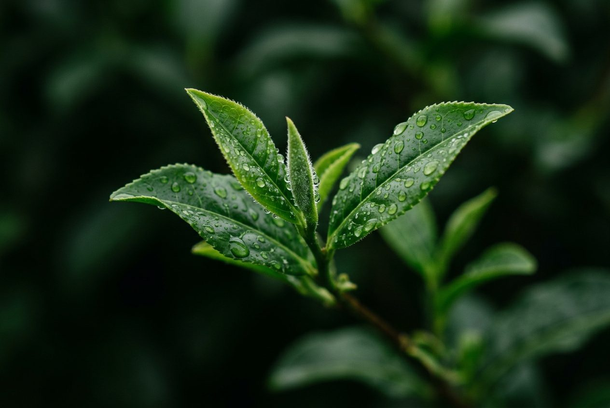

High-grown Ceylon tea, picked by hand on the misty slopes above Nuwara Eliya and sealed within a day of the harvest.
At 1,800 metres the clouds roll through the tea every morning. The leaves grow slowly, and slow leaves taste brighter.
Each tea comes from a single slope and a single season, so every tin tastes of where and when it was picked.
Golden, floral and light, with a finish of white peach.
Only the unopened buds, sun-dried and silvery. Delicate and sweet.
Bold and brisk, made for a splash of milk and a long afternoon.

"Two leaves and a bud, nothing more."The plucker's rule since 1867